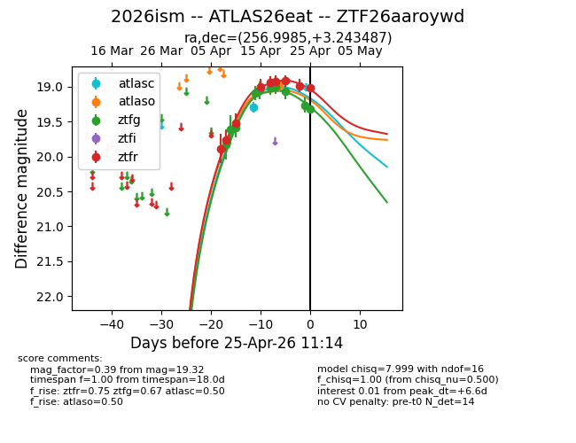
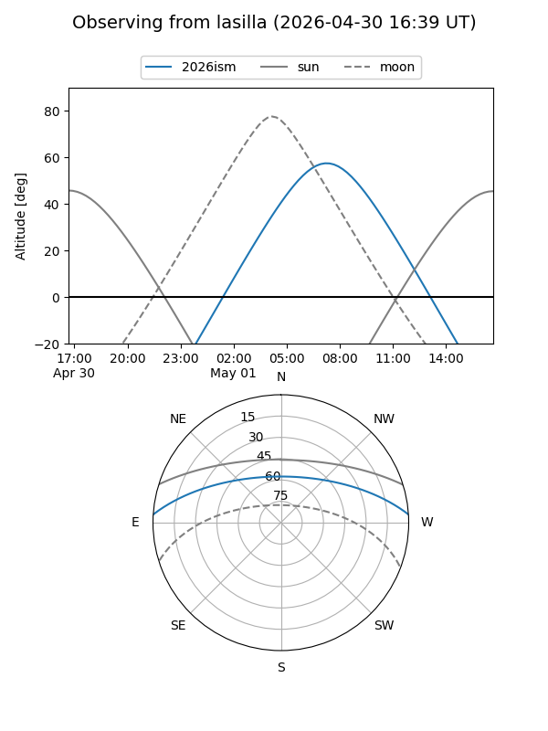
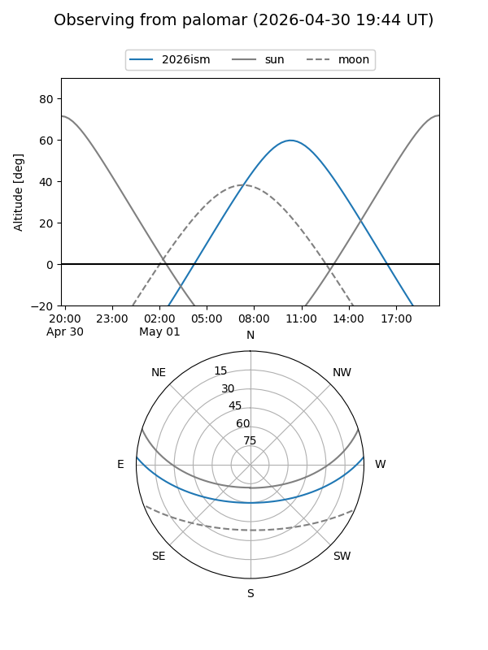
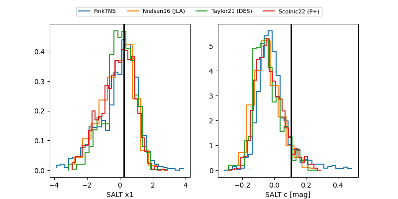

2026ism
Target 2026ism at 2026-04-25 11:15
Aliases and brokers:
FINK: link
Lasair: link
ALeRCE: link
TNS: link
YSE: link
alt names
ZTF26aaroywd (ztf,fink_ztf)
2026ism (tns,yse)
ATLAS26eat (atlas)
Coordinates:
equatorial (ra, dec) = 256.9985,+3.24349
equatorial (HMS+DMS) = 17:07:59.65,+03:14:36.55
galactic (l, b) = (23.5636,+24.41734)
Flags:
Photometry:
last atlasc=19.30, atlaso=18.98, ztfg=19.32, ztfr=19.01
1 atlasc, 1 atlaso, 10 ztfg, 9 ztfr detections
Lightcurve

Visibility


Additional plots
